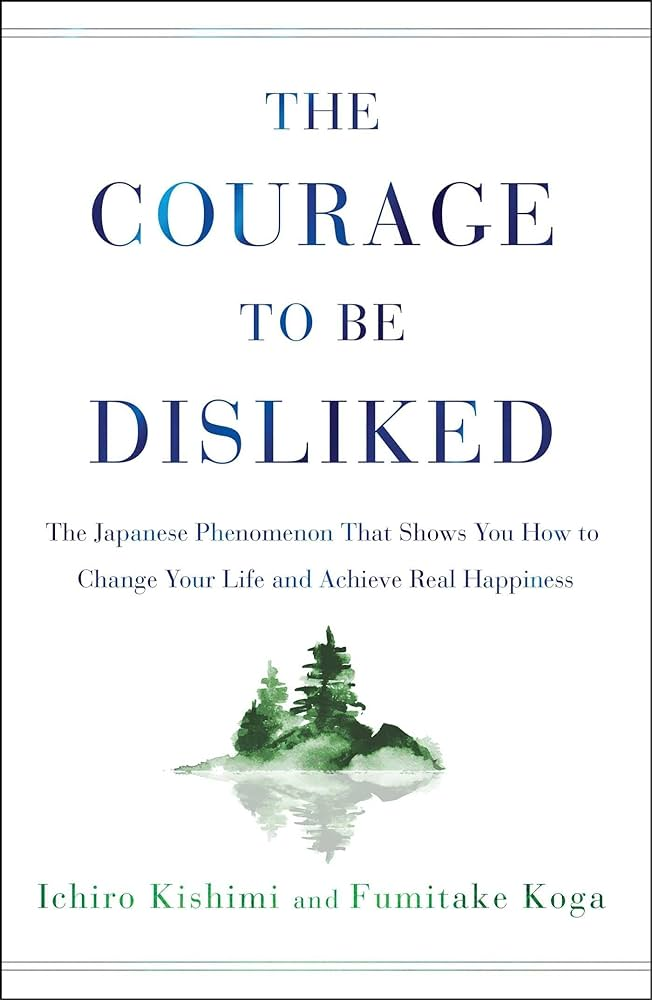

Book Summary: The Courage To Be Happy

I recently listened to the audiobook for the above, and here are my notes (mostly from the last few chapters).
I recently listened to the audiobook for the above, and here are my notes (mostly from the last few chapters).

I listened to the audiobook version of this several times and here is my summary of it.
My biggest takeaways are:
Written by William Irvine, and summarized below. Read on 2022-06-19.
Recently, I met one of my friends who, I last recall, was quite invested in the processes of altering one's diet, environment and behavioral patterns, so as to improve the quality of life (think Andrew Huberman or, taken to the extreme, Brian Johnson, a billionaire spending $2M yearly to reverse aging). This refers to maintaining a Paleolithic, low stress (both biological and mental), back-to-basics type of living in current, modern, high pressure society (e.g. Singapore).
Recently I read 'A Head Full of Ghosts' by Paul Tremblay. It's a novel, similar to the Exorcist, but different in that the entire sequence of events has been filmed by a TV crew for a show, and one of the protagonist is actively critiquing the theatric aspect of the show, while narrating the actual creepy events.
Recently, in my country, there has been a spate of politicians getting involved in extramarital affairs. This got me thinking more deeply about how we rate other people in terms of attractiveness, and whether a total order of the individual's ranking exists.

ChatGPT was recently released and has been taking the world by storm. In the online space, there is much discussion about whether we are close to general purpose AI. There is no doubt that better and more capable models (e.g. GPT-4) will soon be released, which will overcome the flaws of its predecessors.

I recently watched a discussion involving Donald Huffman, in which he argues that the world as we perceive it is not its true form - our senses are heavily colored by evolutionary adaptations to ensure our survival and reproduction. The analogy he provides is that what we perceive is akin to the icons on a computer desktop, bearing no resemblance to the actual forms which are magnetic charges on a spinning disk. This is similar to the argument he puts forth in his book, The Case Against Reality, as well as a summary online.

From the 20th to 31st of July 2022, I signed up for a 10-day meditation retreat at Saleng Eco Farm, Johor, conducted by a Vipassana Meditation Center following the teachings of S. N. Goenka (which are in turn derived from Buddhism1).

Update: I discuss more on the measure of intelligence in this post.
Every decade, huge advancements are being made in the field of artificial intelligence, and each time we are amazed. In the 1960s we had ELIZA, a convincing human-like chatbot. In the 1980s, the world watched as Deep Blue defeated Garry Kasparov for the first time. In the 2010s, the resurgence of deep learning completely transformed prior approaches in nearly all domains, from images and video, to text and speech.